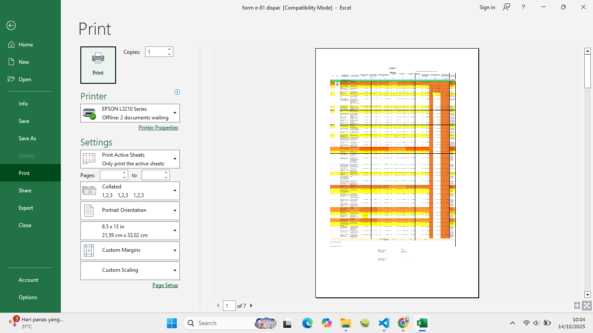
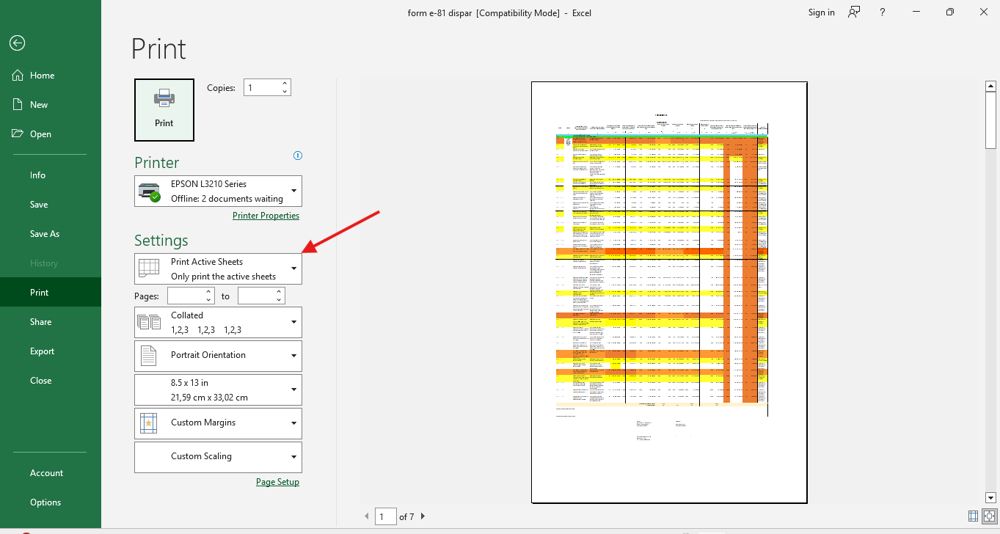
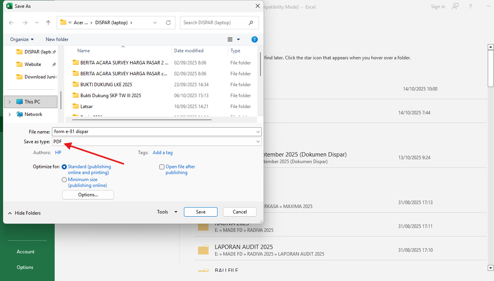
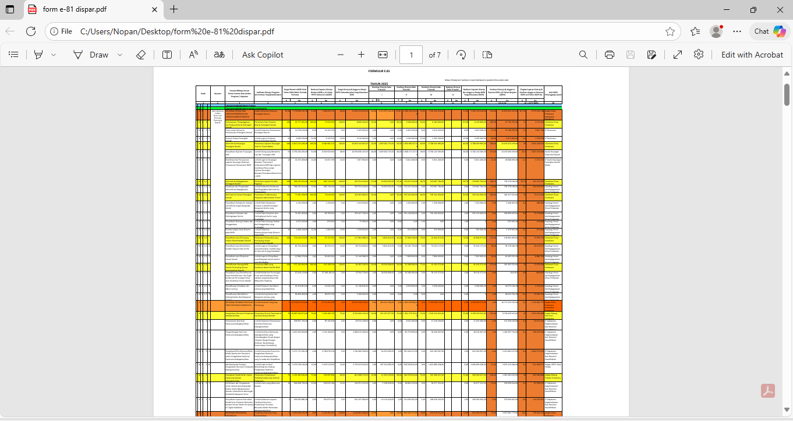

Penjelasan Masalah
Mengubah file excel menjadi pdf perlu pengaturan lebih lanjut agar dapat menampilkan dokumen sepenuhnya.
Langkah Penyelesaian
- Sebelum menyimpan file excel menjadi pdf gunakan print preview untuk melihat hasilnya 
- Tampilan pada print preview ini menjadi indikator file pdf nantinya pastikan area yang ingin dijadikan pdf terlihat sepenuhnya.
- Anda juga dapat mengatur sheet yang mana saja yang akan dijadikan pdf melalui setting print active sheets, entire workbook, atau selection. 
- Setting tersebut juga perlu diperhatikan saat akan mencetak dokumen pada excel.
- Langkah berikutnya save as, browse dan jangan lupa ganti save as type menjadi PDF kemudian save. 
- Anda bisa memastikan apakah format pdf sesuai seperti yang diinginkan dengan membuka file pdf yang sudah anda simpan. 